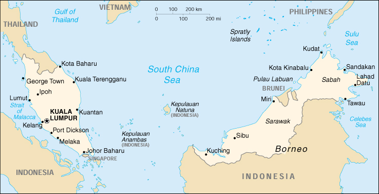

|
Malaysia | |
| Introduction Geography People Government Economy Communications Transportation Military Transnational Issues | ||
|  | ||
| Malaysia | Introduction | Top of Page |
| Background: | Malaysia was created in 1963 through the merging of Malaya (independent in 1957) and the former British Singapore, both of which formed West Malaysia, and Sabah and Sarawak in north Borneo, which composed East Malaysia. The first three years of independence were marred by hostilities with Indonesia. Singapore separated from the union in 1965. |
| Malaysia | Geography | Top of Page |
| Location: | Southeastern Asia, peninsula and northern one-third of the island of Borneo, bordering Indonesia and the South China Sea, south of Vietnam |
| Geographic coordinates: | 2 30 N, 112 30 E |
| Map references: | Southeast Asia |
| Area: |
total:
329,750 sq km
land: 328,550 sq km water: 1,200 sq km |
| Area - comparative: | slightly larger than New Mexico |
| Land boundaries: |
total:
2,669 km
border countries: Brunei 381 km, Indonesia 1,782 km, Thailand 506 km |
| Coastline: | 4,675 km (Peninsular Malaysia 2,068 km, East Malaysia 2,607 km) |
| Maritime claims: |
continental shelf:
200-m depth or to the depth of exploitation; specified boundary in the South China Sea
exclusive economic zone: 200 NM territorial sea: 12 NM |
| Climate: | tropical; annual southwest (April to October) and northeast (October to February) monsoons |
| Terrain: | coastal plains rising to hills and mountains |
| Elevation extremes: |
lowest point:
Indian Ocean 0 m
highest point: Gunung Kinabalu 4,100 m |
| Natural resources: | tin, petroleum, timber, copper, iron ore, natural gas, bauxite |
| Land use: |
arable land:
3%
permanent crops: 12% permanent pastures: 0% forests and woodland: 68% other: 17% (1993 est.) |
| Irrigated land: | 2,941 sq km (1998 est.) |
| Natural hazards: | flooding, landslides |
| Environment - current issues: | air pollution from industrial and vehicular emissions; water pollution from raw sewage; deforestation; smoke/haze from Indonesian forest fires |
| Environment - international agreements: |
party to:
Biodiversity, Climate Change, Desertification, Endangered Species, Hazardous Wastes, Law of the Sea, Marine Life Conservation, Nuclear Test Ban, Ozone Layer Protection, Ship Pollution, Tropical Timber 83, Tropical Timber 94, Wetlands
signed, but not ratified: Climate Change-Kyoto Protocol |
| Geography - note: | strategic location along Strait of Malacca and southern South China Sea |
| Malaysia | People | Top of Page |
| Population: | 22,229,040 (July 2001 est.) |
| Age structure: |
0-14 years:
34.5% (male 3,943,324; female 3,724,634)
15-64 years: 61.35% (male 6,828,670; female 6,808,623) 65 years and over: 4.15% (male 404,042; female 519,747) (2001 est.) |
| Population growth rate: | 1.96% (2001 est.) |
| Birth rate: | 24.75 births/1,000 population (2001 est.) |
| Death rate: | 5.2 deaths/1,000 population (2001 est.) |
| Net migration rate: |
0 migrant(s)/1,000 population (2001 est.)
note: does not reflect net flow of an unknown number of illegal immigrants from other countries in the region |
| Sex ratio: |
at birth:
1.07 male(s)/female
under 15 years: 1.06 male(s)/female 15-64 years: 1 male(s)/female 65 years and over: 0.78 male(s)/female total population: 1.01 male(s)/female (2001 est.) |
| Infant mortality rate: | 20.31 deaths/1,000 live births (2001 est.) |
| Life expectancy at birth: |
total population:
71.11 years
male: 68.48 years female: 73.92 years (2001 est.) |
| Total fertility rate: | 3.24 children born/woman (2001 est.) |
| HIV/AIDS - adult prevalence rate: | 0.42% (1999 est.) |
| HIV/AIDS - people living with HIV/AIDS: | 49,000 (1999 est.) |
| HIV/AIDS - deaths: | 1,900 (1999 est.) |
| Nationality: |
noun:
Malaysian(s)
adjective: Malaysian |
| Ethnic groups: | Malay and other indigenous 58%, Chinese 27%, Indian 8%, others 7% (2000) |
| Religions: | Islam, Buddhism, Daoism, Hinduism, Christianity, Sikhism; note - in addition, Shamanism is practiced in East Malaysia |
| Languages: | Bahasa Melayu (official), English, Chinese dialects (Cantonese, Mandarin, Hokkien, Hakka, Hainan, Foochow), Tamil, Telugu, Malayalam, Panjabi, Thai; note - in addition, in East Malaysia several indigenous languages are spoken, the largest of which are Iban and Kadazan |
| Literacy: |
definition:
age 15 and over can read and write
total population: 83.5% male: 89.1% female: 78.1% (1995 est.) |
| Malaysia | Government | Top of Page |
| Country name: |
conventional long form:
none
conventional short form: Malaysia former: Federation of Malaysia |
| Government type: |
constitutional monarchy
note: Malaya (what is now Peninsular Malaysia) formed 31 August 1957; Federation of Malaysia (Malaya, Sabah, Sarawak, and Singapore) formed 9 July 1963 (Singapore left the federation on 9 August 1965); nominally headed by the paramount ruler and a bicameral Parliament consisting of a nonelected upper house and an elected lower house; Peninsular Malaysian states - hereditary rulers in all but Melaka, Penang, Sabah, and Sarawak, where governors are appointed by the Malaysian Government; powers of state governments are limited by the federal constitution; under terms of the federation, Sabah and Sarawak retain certain constitutional prerogatives (e.g., the right to maintain their own immigration controls); Sabah - holds 20 seats in House of Representatives, with foreign affairs, defense, internal security, and other powers delegated to federal government; Sarawak - holds 28 seats in House of Representatives, with foreign affairs, defense, internal security, and other powers delegated to federal government |
| Capital: | Kuala Lumpur |
| Administrative divisions: |
13 states (negeri-negeri, singular - negeri) and 2 federal territories* (wilayah-wilayah persekutuan, singular - wilayah persekutuan); Johor, Kedah, Kelantan, Labuan*, Melaka, Negeri Sembilan, Pahang, Perak, Perlis, Pulau Pinang, Sabah, Sarawak, Selangor, Terengganu, Wilayah Persekutuan*
note: the city of Kuala Lumpur is located within the federal territory of Wilayah Persekutuan; the terms therefore are not interchangeable; there may be a new federal territory named Putrajaya |
| Independence: | 31 August 1957 (from UK) |
| National holiday: | Independence Day/Malaysia Day, 31 August (1957) |
| Constitution: | 31 August 1957, amended 16 September 1963 |
| Legal system: | based on English common law; judicial review of legislative acts in the Supreme Court at request of supreme head of the federation; has not accepted compulsory ICJ jurisdiction |
| Suffrage: | 21 years of age; universal |
| Executive branch: |
chief of state:
Paramount Ruler Sultan TUNKU SALAHUDDIN Abdul Aziz Shah ibni Al-Marhum Sultan Hisammuddin Alam Shah (since 26 April 1999); Deputy Paramount Ruler Sultan MIZAN Zainal Abidin ibni A-Marhum Sultan Mahmud Al-Muktafi Billah Shah
head of government: Prime Minister Dr. MAHATHIR bin Mohamad (since 16 July 1981); Deputy Prime Minister ABDULLAH bin Ahmad Badawi (since 8 January 1999) cabinet: Cabinet appointed by the prime minister from among the members of Parliament with consent of the paramount ruler elections: paramount ruler and deputy paramount ruler elected by and from the hereditary rulers of nine of the states for five-year terms; election last held 27 February 1999 (next to be held NA 2004); prime minister designated from among the members of the House of Representatives; following legislative elections, the leader of the party that wins a plurality of seats in the House of Representatives becomes prime minister election results: Sultan TUNKU SALAHUDDIN Abdul Aziz Shah ibni Al-Marhum Sultan Hisammuddin Alam Shah elected paramount ruler; Sultan MIZAN Zainal Abidin ibni A-Marhum Sultan Mahmud Al-Muktafi Billah Shah elected deputy paramount ruler |
| Legislative branch: |
bicameral Parliament or Parlimen consists of nonelected Senate or Dewan Negara (69 seats; 43 appointed by the paramount ruler, 26 appointed by the state legislatures) and the House of Representatives or Dewan Rakyat (193 seats; members elected by popular vote weighted toward the rural Malay population to serve five-year terms)
elections: House of Representatives - last held 29 November 1999 (next must be held by 20 December 2004) election results: House of Representatives - percent of vote by party - NF 56%, other 44%; seats by party - NF 148, PAS 27, DAP 10, NJP 5, PBS 3 |
| Judicial branch: | Federal Court (judges appointed by the paramount ruler on the advice of the prime minister) |
| Political parties and leaders: | Alternative Coalition or Barisan Alternatif-BA (includes the following parties: Party Islam Se-Malaysia or PAS [FADZIL Mohamad Noor], National Justice Party or NJP [WAN AZIZAH Wan Ismail], Democratic Action Party or DAP [LIM Kit Siang], and Malaysian People's Party or PRM [SYED HUSIN]); National Front or NF (ruling coalition dominated by the United Malays National Organization or UMNO [MAHATHIR bin Mohammad], includes the following parties: Malaysian Indian Congress or MIC [S. Samy VELLU], Malaysian Chinese Association or MCA [LING Liong Sik], Gerakan Rakyat Malaysia or Gerakan [LIM Keng Yaik], Parti Pesaka Bumiputra Bersatu or PBB [Patinggi Haji Abdul TAIB Mahmud], Parti Angkatan Keadilan Rakyat Bersatu or Akar [PANDIKAR Amin Mulia], Parti Bangsa Dayak Sarawak or PBDS [Leo MOGGIE], Sarawak United People's Party or SUPP [George CHAN Hong Nam], Liberal Democratic Party or LDP [CHONG Kah Kiat], Sabah Progressive Party or SAPP [YONG Teck Lee], People's Progressive Party or PPP [M. KAYVEAS], Parti Bersatu Rakyat Sabah or PBRS [Joseph KURUP], Sarawak National Party or SNAP [Amar James WONG], Parti Demokratik Sabah or PDS [leader NA], and United Pasok Momogun Kadazan Organization or UPKO (state level only) [Bernard DOMPOK]); Parti Bersatu Sabah or PBS [Joseph PAIRIN Kitingan]; Parti Bersekutu [HARRIS Salleh]; State Reform Party of Sarawak or STAR [PATAU Rubis] |
| Political pressure groups and leaders: | NA |
| International organization participation: | APEC, ARF, AsDB, ASEAN, BIS, C, CCC, CP, ESCAP, FAO, G-15, G-77, IAEA, IBRD, ICAO, ICFTU, ICRM, IDA, IDB, IFAD, IFC, IFRCS, IHO, ILO, IMF, IMO, Inmarsat, Intelsat, Interpol, IOC, ISO, ITU, MINURSO, MONUC, NAM, OIC, OPCW, UN, UNCTAD, UNESCO, UNIDO, UNIKOM, UNMEE, UNMIBH, UNMIK, UNTAET, UPU, WCL, WFTU, WHO, WIPO, WMO, WToO, WTrO |
| Diplomatic representation in the US: |
chief of mission:
Ambassador GHAZZALI Sheikh Abdul Khalid
chancery: 2401 Massachusetts Avenue NW, Washington, DC 20008 telephone: [1] (202) 328-2700 FAX: [1] (202) 483-7661 consulate(s) general: Los Angeles and New York |
| Diplomatic representation from the US: |
chief of mission:
Ambassador B. Lynn PASCOE
embassy: 376 Jalan Tun Razak, 50400 Kuala Lumpur mailing address: P. O. Box No. 10035, 50700 Kuala Lumpur; American Embassy Kuala Lumpur, APO AP 96535-8152 telephone: [60] (3) 2168-5000 FAX: [60] (3) 2168-4961 |
| Flag description: | 14 equal horizontal stripes of red (top) alternating with white (bottom); there is a blue rectangle in the upper hoist-side corner bearing a yellow crescent and a yellow fourteen-pointed star; the crescent and the star are traditional symbols of Islam; the design was based on the flag of the US |
| Malaysia | Economy | Top of Page |
| Economy - overview: | GDP grew at 8.6% in 2000, mainly on the strength of double-digit export growth and continued government fiscal stimulus. As an oil exporter, Malaysia also benefited from higher petroleum prices. Higher export revenues allowed the country to register a current account surplus, but foreign exchange reserves have been declining - from a peak of $34.5 billion in April 2000 to $29.7 billion by December - as foreign investors pulled money out of the country. Despite this development, Kuala Lumpur is unlikely to abandon its currency peg soon. An economic slowdown in key Western markets, especially the United States, and lower world demand for electronics products will slow GDP growth to 3%-6% in 2001, according to private forecasters. Over the longer term, Malaysia's failure to make substantial progress on key reforms of the corporate and financial sectors clouds prospects for sustained growth and the return of critical foreign investment. |
| GDP: | purchasing power parity - $223.7 billion (2000 est.) |
| GDP - real growth rate: | 8.6% (2000 est.) |
| GDP - per capita: | purchasing power parity - $10,300 (2000 est.) |
| GDP - composition by sector: |
agriculture:
14%
industry: 44% services: 42% (2000) |
| Population below poverty line: | 6.8% (1997 est.) |
| Household income or consumption by percentage share: |
lowest 10%:
1.4%
highest 10%: 20.4% (1997 est.) |
| Inflation rate (consumer prices): | 1.7% (2000) |
| Labor force: | 9.6 million (2000 est.) |
| Labor force - by occupation: | local trade and tourism 28%, manufacturing 27%, agriculture, forestry, and fisheries 16%, services 10%, government 10%, construction 9% (2000 est.) |
| Unemployment rate: | 2.8% (2000 est.) |
| Budget: |
revenues:
$16.4 billion
expenditures: $17.8 billion, including capital expenditures of $43 billion (2000 est.) |
| Industries: | Peninsular Malaysia - rubber and oil palm processing and manufacturing, light manufacturing industry, electronics, tin mining and smelting, logging and processing timber; Sabah - logging, petroleum production; Sarawak - agriculture processing, petroleum production and refining, logging |
| Industrial production growth rate: | 12.1% (2000 est.) |
| Electricity - production: | 59.044 billion kWh (1999) |
| Electricity - production by source: |
fossil fuel:
91.61%
hydro: 8.39% nuclear: 0% other: 0% (1999) |
| Electricity - consumption: | 54.872 billion kWh (1999) |
| Electricity - exports: | 50 million kWh (1999) |
| Electricity - imports: | 11 million kWh (1999) |
| Agriculture - products: | Peninsular Malaysia - rubber, palm oil, cocoa, rice; Sabah - subsistence crops, rubber, timber, coconuts, rice; Sarawak - rubber, pepper; timber |
| Exports: | $97.9 billion (2000 est.) |
| Exports - commodities: | electronic equipment, petroleum and liquefied natural gas, chemicals, palm oil, wood and wood products, rubber, textiles |
| Exports - partners: | US 21%, Singapore 18%, Japan 13%, Hong Kong 5%, Netherlands 4%, Taiwan 4%, Thailand 3% (2000 est.) |
| Imports: | $82.6 billion (2000 est.) |
| Imports - commodities: | machinery and transport equipment, chemicals, food, fuel and lubricants |
| Imports - partners: | Japan 21%, US 17%, Singapore 14%, Taiwan 6%, South Korea 5%, Thailand 4%, China 4% (2000 est.) |
| Debt - external: | $41.8 billion (2000 est.) |
| Currency: | ringgit (MYR) |
| Currency code: | MYR |
| Exchange rates: | ringgits per US dollar - 3.8000 (January 2001), 3.8000 (2000), 3.8000 (1999), 3.9244 (1998), 2.8133 (1997), 2.5159 (1996) |
| Fiscal year: | calendar year |
| Malaysia | Communications | Top of Page |
| Telephones - main lines in use: | 4.5 million (1999) |
| Telephones - mobile cellular: | 2.698 million (1999) |
| Telephone system: |
general assessment:
modern system; international service excellent
domestic: good intercity service provided on Peninsular Malaysia mainly by microwave radio relay; adequate intercity microwave radio relay network between Sabah and Sarawak via Brunei; domestic satellite system with 2 earth stations international: submarine cables to India, Hong Kong, and Singapore; satellite earth stations - 2 Intelsat (1 Indian Ocean and 1 Pacific Ocean) (2001) |
| Radio broadcast stations: | AM 56, FM 31 (plus 13 repeater stations), shortwave 5 (1999) |
| Radios: | 10.9 million (1999) |
| Television broadcast stations: | 27 (plus 15 high-power repeaters) (1999) |
| Televisions: | 10.8 million (1999) |
| Internet country code: | .my |
| Internet Service Providers (ISPs): | 7 (2000) |
| Internet users: | 1.5 million (2000) |
| Malaysia | Transportation | Top of Page |
| Railways: |
total:
1,801 km
narrow gauge: 1,801 km 1.000-m gauge (148 km electrified) (2000) |
| Highways: |
total:
64,672 km
paved: 48,707 km (including 1,192 km of expressways) unpaved: 15,965 km note: in addition to these national and main regional roads, Malaysia has thousands of kilometers of local roads that are maintained by local jurisdictions (1999) |
| Waterways: |
7,296 km
note: Peninsular Malaysia 3,209 km, Sabah 1,569 km, Sarawak 2,518 km |
| Pipelines: | crude oil 1,307 km; natural gas 379 km |
| Ports and harbors: | Bintulu, Kota Kinabalu, Kuantan, Kuching, Kudat, Labuan, Lahad Datu, Lumut, Miri, Pasir Gudang, Penang, Port Dickson, Port Kelang, Sandakan, Sibu, Tanjung Berhala, Tanjung Kidurong, Tawau |
| Merchant marine: |
total:
362 ships (1,000 GRT or over) totaling 5,103,657 GRT/7,574,999 DWT
ships by type: bulk 62, cargo 110, chemical tanker 35, container 60, liquefied gas 20, livestock carrier 1, passenger 2, petroleum tanker 58, refrigerated cargo 1, roll on/roll off 6, specialized tanker 1, vehicle carrier 6 (2000 est.) |
| Airports: | 115 (2000 est.) |
| Airports - with paved runways: |
total:
33
over 3,047 m: 5 2,438 to 3,047 m: 4 1,524 to 2,437 m: 11 914 to 1,523 m: 6 under 914 m: 7 (2000 est.) |
| Airports - with unpaved runways: |
total:
82
1,524 to 2,437 m: 1 914 to 1,523 m: 8 under 914 m: 73 (2000 est.) |
| Heliports: | 1 (2000 est.) |
| Malaysia | Military | Top of Page |
| Military branches: | Malaysian Army, Royal Malaysian Navy, Royal Malaysian Air Force, Royal Malaysian Police Force, Marine Police, Sarawak Border Scouts |
| Military manpower - military age: | 21 years of age |
| Military manpower - availability: | males age 15-49: 5,800,456 (2001 est.) |
| Military manpower - fit for military service: | males age 15-49: 3,514,023 (2001 est.) |
| Military manpower - reaching military age annually: | males: 196,042 (2001 est.) |
| Military expenditures - dollar figure: | $1.69 billion (FY00 est.) |
| Military expenditures - percent of GDP: | 2.03% (FY00) |
| Malaysia | Transnational Issues | Top of Page |
| Disputes - international: | involved in a complex dispute over the Spratly Islands with China, Philippines, Taiwan, Vietnam, and possibly Brunei; Philippines have not fully revoked claim to Sabah State; Pulau Batu Putih (Pedra Branca Island) disputed with Singapore; Sipadan and Ligitan Islands in dispute with Indonesia |
| Illicit drugs: | transit point for some illicit drugs; drug trafficking prosecuted vigorously and carries severe penalties |
{kind=link}